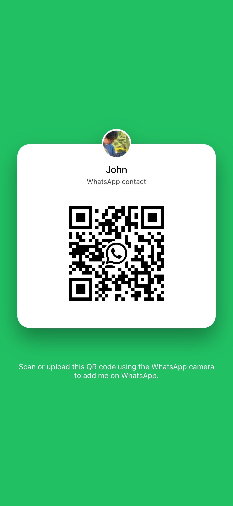

For years, I reached for nicotine whenever I felt stressed, overwhelmed, or needed a quick escape. Using breathwork, I was able to transform myself and return to a happy, healthy person.
There's no question that a mix of Eastern and Western medicine helped me get to where I am today. Though, the practice of breathwork helped me do two specific things: to discover my inner child and to change my emotional patterning. Having had such intense personal experiences with the power of breath, both soft and hard approaches, I dove into the world of pulmonauts, scientists, and shaman who opened this mode of healing to me. Now, as I complete my certification with the Yoga Society of San Francisco, I am dedicated to helping others navigate this same transformation.
Format: 6 weekly 60-minute sessions (virtual or in-person), daily self-practice tracking, and direct text/voice support for acute cravings.
I am currently opening up 3 beta client spots for my 6-week personalized 1:1 journey[cite: 55].
If you are ready for a somatic, compassionate way to quit, send me a message with the word "BREATHE" to learn more[cite: 56, 60].
Booking is managed seamlessly via Calendly, and virtual sessions are hosted on Zoom.
Instagram: @yourhandle
Email: your.email@example.com
Scan to send a message on WhatsApp:
